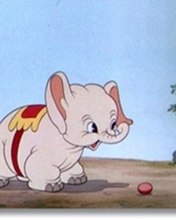

Bobo the Elephant is a Looney Tunes character created by Robert McKimson and voiced by Stan Freberg. Along with his appearances in shorts, Bobo the Elephant appeared in the 1996 film Space Jam, in the crowd scenes.
Bobo is an Indian elephant who is a mascot of the Sweetwater Schnooks and rarely talks.
The classic shorts:
The Films:
Get to meet her fellow pets!Bobo Friends